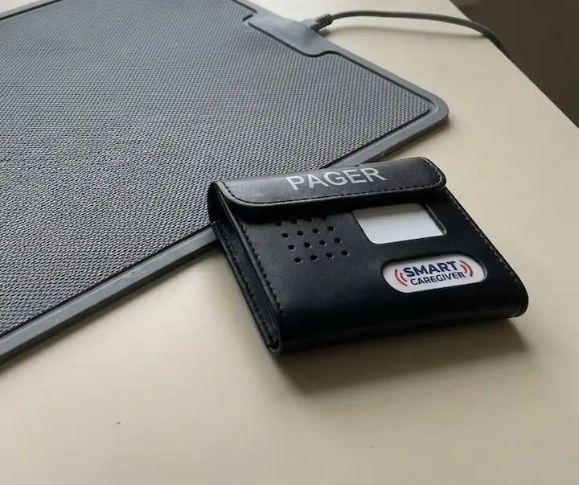
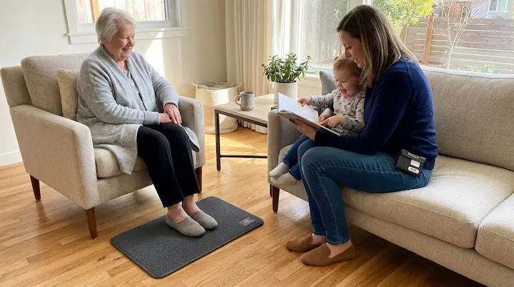

EXCLUSIVE How a Simple Floor Mat by the Bed Helped One Family Stop Worrying About Nighttime Falls
.webp)
The Smart Caregiver Bedside Floor Mat Alarm & Pager System — the device referenced throughout this report.
Three weeks ago, I woke up at 2:47 AM to a sound I will never forget.
Not an alarm. Not the phone ringing. A thud. Dull, heavy, unmistakable. The kind of sound a body makes when it hits a hardwood floor.
I was out of bed before I was even fully awake, running down the hallway in bare feet, heart slamming against my ribs, already knowing what I would find before I turned the corner into my mother's room.
She was on the floor. On her side, next to the bed. Her nightgown tangled around her legs. Her hand reaching for the nightstand she'd already missed.
"Mom!" I dropped to my knees beside her.
"I'm okay," she said. But her voice was shaking. And she wasn't okay. She had a bruise the size of a grapefruit on her hip by morning. She was limping for two weeks after that.
She's 79 years old. She lives with me. And that was the third time she'd fallen trying to get out of bed at night in the past four months.
The first time, she caught herself on the dresser. Scared but uninjured. The second time, she twisted her wrist. Nothing broken, but it swelled up badly enough that we went to urgent care.
This third time, lying on that cold floor at nearly three in the morning, looking up at me with embarrassment and fear in her eyes — that was the time I knew something had to change.
Because I can't be awake 24 hours a day. I can't sleep with one eye open forever. I can't keep waiting for the sound of a fall and hoping I get there in time.
And the terrifying truth, the one no caregiver wants to say out loud, is this: one bad fall is all it takes.
One broken hip. One head injury. One fall that changes everything permanently.
I knew the statistics. According to the CDC, about one in four adults over 65 falls each year, and falling once roughly doubles the chances of falling again.
My mother had already fallen three times.
I was running out of chances to prevent the one that could take her from me.
.webp)
The Problem Every Caregiver Knows But Nobody Talks About
Here's what people don't understand about being a caregiver. It's not the daytime that's hard. During the day, you can watch. You can be there. You can hold an arm, open a door, pull out a chair.
It's the nighttime.
Nighttime is when you're asleep. Nighttime is when your parent or your spouse or your loved one decides they need to use the bathroom, or they're thirsty, or they're confused, and they swing their legs over the side of the bed and try to stand up — alone, in the dark, on legs that don't work the way they used to.
And you don't hear it. You don't know it's happening. Not until the fall. Not until the thud.
I talked to my mother's doctor about it. She nodded the way doctors do when they've heard the same story a hundred times.
"Falls are extremely common in this age group," she said. "Especially nighttime falls. Disorientation, muscle weakness, medication side effects — they all contribute."
"What do I do?" I asked.
"You can install grab bars. Use night lights. Remove rugs that could be tripping hazards. Consider a bed rail."
We'd already done all of that. Every single thing on that list. Night lights in the hallway. Grab bars in the bathroom. Non-slip mats. Bed rails she hated and climbed over anyway.
None of it solved the fundamental problem: I didn't know when she was getting out of bed.
By the time I heard anything, she'd already stood up — or already fallen down.
"Is there anything that would alert me?" I asked the doctor. "Something that tells me the moment she gets up, before she falls?"
The doctor paused. And then she said something that changed everything.
"Have you looked into floor mat alarm systems? Some of my other patients' families use them. There's a wireless one with a pager — the caregiver doesn't have to be in the room. It alerts you the moment they step on the mat."
I wrote it down. That night, I started searching.
.webp)
The Night I Found Something That Actually Worked
I'd tried alarms before. Let me be clear about that.
I'd tried a motion-sensor camera in my mother's room. She hated it. Said it made her feel like she was being watched. She was right — it did. And the motion alerts went off every time she rolled over in bed, so I turned it off after three days of zero sleep.
I'd tried a bed alarm that clips to the mattress and screeches when the person gets up. My mother nearly had a heart attack the first time it went off. It's loud. It's jarring. It scared her so badly she was afraid to move in her own bed.
I'd tried baby monitors. Wearable alert buttons. Even leaving my bedroom door open and hoping I'd hear her footsteps.
Nothing worked. Everything was either too invasive, too alarming for her, or too unreliable for me.
And then I found the Smart Caregiver Bedside Floor Mat Alarm with Caregiver Pager.
I found it through a caregiving forum. A woman named Deborah posted about it. Her situation was almost identical to mine — elderly mother, nighttime falls, constant anxiety.
"This mat saved my sanity," she wrote. "It sits on the floor next to Mom's bed. When she steps on it, my pager buzzes. That's it. No loud alarms. No cameras. No wires. I know she's up within seconds, and I can get to her before she tries to walk on her own."
I read her post three times.
Then I went to the Smart Caregiver website and read everything I could find.
The concept is beautifully simple. It's a pressure-sensitive floor mat — 24 inches by 48 inches, about the size of a bath mat — that you place on the floor next to the bed. When someone steps on it, it sends a wireless signal to a small portable pager that the caregiver carries. The pager can alert you with sound or silent vibration. Range: up to 300 feet.
No alarm sounds in the patient's room. No startling noises. No cameras. No invasion of privacy. The person in bed doesn't even know it's there. They just step on a mat. And you — the caregiver, wherever you are in the house — immediately know they're up.
I sat at my kitchen table reading this at 1 AM and thought: this is exactly what I've been looking for.
But I'm a skeptic by nature. My father was an engineer. He raised me to check the details before I trust the marketing. So I kept reading.
Smart Caregiver isn't a startup. They specialize exclusively in caregiver alert systems. This is all they do. Fall prevention. Wandering prevention. Caregiver notification. Their products are used in homes, assisted living facilities, and nursing homes across the country.
The mat itself is made of durable, non-slip rubber with beveled edges — so it lies flat and doesn't become a tripping hazard itself. That was important to me. The last thing I needed was a fall-prevention device that caused falls.
The system comes pre-programmed. You don't need to configure anything. You take it out of the box, place the mat, turn on the pager, and it works. That mattered too, because I am not a technical person and I didn't want to spend hours reading a manual.
And the price — $149.95 — was less than what I'd already spent on the motion camera and the bed alarm that both ended up in a drawer.
I ordered it that night.

The First Night Changed Everything
The box arrived three days later. I opened it at the kitchen table while my mother was watching her shows in the living room.
Inside: the floor mat, flat-packed. The wireless transmitter, already attached. The portable pager. Two AAA batteries for the pager. A simple instruction sheet.
Setup took me less than five minutes. I'm not exaggerating. I placed the mat on the floor next to my mother's side of the bed, right where her feet would land when she got up. I turned on the transmitter. I put the batteries in the pager and clipped it to my pajama pocket.
Done.
My mother didn't even notice the mat. It's thin and flat. It looks like a simple black floor mat. She stepped on it getting into bed that night and didn't say a word about it.
I went to bed. Pager on the nightstand beside me. And for the first time in months, I didn't lie there staring at the ceiling, listening for sounds from down the hall.
At 3:15 AM, the pager buzzed.
Not a screaming alarm. Not a siren. A gentle, insistent buzz in my hand. I was awake instantly.
I walked down the hall — quickly but calmly — and found my mother sitting on the edge of the bed, feet on the mat, about to stand up.
"Need the bathroom, Mom?"
She looked up, surprised. "How did you know I was up?"
"Just had a feeling," I said.
I helped her stand. Walked her to the bathroom. Walked her back. She was in bed again within four minutes.
No fall. No stumble. No fear. No thud.
I went back to my room and sat on the edge of my bed and cried.
Because for months, that exact scenario — her getting up alone in the dark — had been my worst nightmare. And now I had a tool that turned a nightmare into a non-event. She got up. I knew about it. I helped her. She was safe.
That's it. That's all I ever wanted.
What Happened Over the Next Few Weeks
The first week, my mother got up at night four times. Every single time, the pager alerted me. Every single time, I was at her side within 30 seconds. Every single time, she was safe.
Zero falls.
The second week, something else happened that I wasn't expecting. My sleep improved dramatically. I know that sounds backwards — the pager wakes me up, so how could I sleep better? But here's the thing: before the mat, I was sleeping in a constant state of low-level anxiety. I'd wake up four or five times a night on my own, listening. Checking. Worrying.
Now, I fall asleep knowing that if she gets up, I'll know. The pager will tell me. I don't have to listen for footsteps. I don't have to lie awake wondering. I can actually, genuinely rest — because the mat is doing the watching for me.
My sister called me at the end of week two. "You sound different," she said.
"Different how?"
"Less exhausted. More like yourself."
She was right. I'd gotten more real sleep in two weeks than I had in the previous three months.
By week three, my mother had figured out the mat was there. She's sharp — she noticed that I kept showing up exactly when she got out of bed. She asked me about it.
I told her the truth. "There's a mat next to your bed, Mom. When you step on it, it sends a signal to my pager. That's how I know you're up."
I expected her to be annoyed. To feel monitored. To tell me to take it away.
Instead, she looked at me and said, "Good. I was worried about falling too."
That sentence nearly broke me. Because she'd been carrying the same fear I had. She just hadn't wanted to say it. She didn't want to be a burden. She didn't want to admit she was scared.
But she was. And the mat gave her peace of mind too.
"I'm glad you're there when I get up," she said quietly. "I feel safer."
.webp)
Why This System Is Different From Everything Else I Tried
I've now been using the Smart Caregiver Floor Mat Alarm for almost two months. And I want to be very specific about why this works where everything else failed.
It's silent in the patient's room. This is the single most important feature. The alarm doesn't go off next to my mother. There's no beeping, no screeching, no startling noise. She steps on the mat and nothing happens in her room. The alert goes to my pager only. She doesn't even know it activated. This means she's not scared. She's not anxious. She's not afraid to get out of bed. She just lives normally — and I get notified silently.
The range is enormous. 300 feet. That means I can be anywhere in the house — kitchen, basement, backyard — and still receive the alert. With the baby monitor I tried before, I had to be within earshot. With this pager, I have real freedom to move around and do other things.
The mat doesn't look medical. It looks like a regular floor mat. My mother's friends have visited and nobody has noticed it. There's no clinical feeling. No hospital equipment vibe. It's just a mat on the floor.
It's completely non-invasive. No cameras. No wearable devices she has to remember to put on. No buttons to press. She doesn't have to do anything. She just gets out of bed like she always has, and the system does the rest.
It was ready in five minutes. No programming. No app downloads. No Wi-Fi configuration. No pairing process I'd need a teenager to figure out. It came pre-programmed. Out of the box, place the mat, turn on the pager, done.
The mat is safe. Non-slip rubber bottom. Beveled edges so you can't trip on it. Lies completely flat. It doesn't slide around on hardwood or carpet. I was genuinely worried about this — the last thing you want is a fall-prevention device that creates a fall hazard. Smart Caregiver clearly thought about this.
And the pager itself is small and practical. It clips to a belt or fits in a pocket. It has both audible and vibrate modes — I use vibrate at night so it doesn't wake my husband, and audible during the day when I'm doing things around the house.
I want to be honest about one thing. This is not a medical device. It doesn't prevent falls on its own. What it does is give you time. The most precious thing a caregiver can have. Time to get there before the fall happens. Time to help. Time to intervene.
Without the mat, I was reacting to falls that had already happened. With the mat, I'm preventing them.
That's the difference. And it's everything.
- Pressure-sensitive mat (24" x 48") — fits beside any bed
- Wireless pager with 300 ft range — sound or vibrate modes
- Silent in patient's room — no startling alarms
- Non-slip, beveled-edge mat — no tripping hazard
- Pre-programmed — ready to use out of the box
- Expandable — pager works with additional Smart Caregiver sensors
- No Wi-Fi, no app, no subscription required
The Cost of Not Having This
Let me talk about the money, because I know it matters.
The Smart Caregiver Floor Mat Alarm with Pager costs $149.95. That's the full system — mat and pager. One-time purchase. No monthly subscription. No recurring fees. No app charges. Free shipping.
Compare that to what I'd already spent before I found this:
Motion-sensor camera: $89. Returned after three days. Bed alarm with room siren: $65. In a drawer after one night. Baby monitor: $45. Useless beyond one room. Grab bars and bed rails: about $200 combined. Helpful but not a solution. Urgent care visit for my mother's twisted wrist: $180 with insurance.
That's almost $600 on things that either didn't work or weren't enough.
The floor mat — at $149.95 — is the only thing that actually solved the problem.
And here's the calculation that made the decision easy for us: a fall that ends in a fracture means weeks of recovery, physical therapy, and a long stretch where she needs help with things she used to do on her own. We had already been through a smaller version of that with her wrist.
$149.95 for an early warning that gives me the chance to be there first? That's not an expense. That's the best money I've ever spent.
.webp)
What It's Like Now
It's been almost two months. The mat is part of our lives now. My mother doesn't think about it. I barely think about it. It just works.
Every night, she goes to bed. The mat is on the floor. The pager is on my nightstand. And I sleep.
Actually sleep. Not the half-conscious, one-ear-listening, anxiety-riddled version of sleep I'd been getting for the past year. Real, restorative, deep sleep. Because I know — I genuinely know — that if she gets up, I'll be alerted within seconds.
She's gotten up at night maybe two or three times a week since we started using it. Every time, the pager buzzed. Every time, I was there. Every time, she was safe.
Zero falls in two months.
After three falls in four months before the mat.
Zero.
My sister bought one for our aunt last week. Our aunt is 83 and lives alone — my cousin checks on her daily but can't be there at night. The mat and pager give my cousin peace of mind even from a distance, because the range is long enough that they're exploring putting the pager on a relay system to extend it.
My neighbor, a home health aide, saw the mat at my house and ordered two for her clients. "This is what I've been telling families to get for years," she said. "Most people don't know it exists."
And that's the thing that frustrates me. Most people don't know this exists. They know about bed alarms that scare patients. They know about cameras that invade privacy. They know about the wearable buttons that elderly people forget to put on or refuse to wear.
But a silent mat that alerts a pager 300 feet away without making a single sound in the room? Most caregivers have never heard of it. I certainly hadn't. And I spent months searching.
.webp)
If You're Caring for Someone at Risk of Falls, Read This
I'm writing this because I know there are thousands of families going through what I went through.
The constant worry. The interrupted sleep. The fear every time you hear a noise at night. The guilt of knowing you can't be awake 24 hours a day. The helplessness of finding someone you love on the floor and thinking, I should have been there.
I know that feeling. I've lived it. And I want you to know that it doesn't have to be that way.
The Smart Caregiver Floor Mat Alarm with Pager won't eliminate every risk. Falls can happen anywhere, anytime. No device can guarantee complete safety. I want to be honest about that.
But what this system does is give you something invaluable: an early warning. The moment your loved one's feet touch the floor, you know about it. You have time to respond. You have the chance to be there before a fall happens, not after.
And for the person you're caring for, it preserves their dignity. No cameras watching them. No alarms scaring them. No buttons they have to remember. They just live their life normally — and you're silently, discreetly, lovingly watching over them.
If your parent, your spouse, your grandparent, or your patient has fallen at night — or if you're terrified that they will — don't wait. Don't do what I did and spend months trying things that don't work while the risk gets higher every night.
The sooner you set up the mat, the sooner you sleep again. And the sooner your loved one is safer.
My mother fell three times in four months before I found this.
She hasn't fallen once since.
That's not a coincidence. That's a mat on the floor and a pager in my pocket.
And it cost less than the urgent care visit from her last fall.

Last night, my mother got up at 2 AM. The pager buzzed softly on my nightstand. I walked down the hall, found her sitting on the edge of the bed, and helped her to the bathroom.
"Thank you, sweetheart," she said as I tucked her back in.
"Always, Mom."
She was back asleep in two minutes. I was back asleep in five.
No fall. No fear. No ambulance. No hospital. No broken bones.
Just a daughter who got there in time. Because a mat on the floor told her it was time to get up.
That's it. That's the whole story.
A $149 mat. A pager in my pocket. And the peace of mind that no amount of money can buy.
Reader Comments
Works very well! Just what we needed. My mother kept getting up at night and we had no way of knowing until she'd already been wandering for 10 minutes. Now I know the second her feet hit the floor. Setup was incredibly easy — literally five minutes out of the box. Best purchase we've made for Mom's safety.
Judy K. Does the pager vibrate quietly enough to not wake your spouse? My husband is a light sleeper and I'm worried about that.
Product works good right out of the box. The pager alert is perfect — it notifies me without startling Dad. He doesn't even know the mat is there, which is exactly what we wanted. Previously we had one of those bed alarms that beeps in the room and it terrified him every time. This is a thousand times better. Provides a pager alert so as not to startle the patient. Highly recommend.
This mat was a winner on the first night!! The pager rings like a doorbell and it woke me up as soon as my grandfather's feet touched it. It's so nice to be instantaneously alerted about his movement! He never wants to wake me, but he needs to be constantly monitored so I am very appreciative of this mat. Before this I was sleeping maybe 3-4 hours a night from anxiety. Now I actually rest. Game changer for our family.
Angela H. Same experience here. My wife has Parkinson's and the nighttime getting-up was the scariest part. This mat gave us both our sleep back. She feels safer and I can actually rest knowing I'll be alerted.
Love this mat! Instead of running back and forth to check on Mom, I can get other chores done. I placed it beside her bed and also bought a second one for the hallway. The pager works with both mats, so I know whether she's getting out of bed or heading toward the front door. I can do other things with the peace of mind that Mom "is not on the move" and safe. Floor mat, what a time saver.
I'm a home health aide and I've recommended this to multiple families. It's the most practical fall prevention product I've encountered in 15 years of caregiving. The fact that the patient doesn't hear the alarm is key — bed alarms that beep in the room cause anxiety, confusion, and sometimes cause the very falls they're supposed to prevent. This system gets it right. Silent for the patient, immediate for the caregiver.
Donna Richardson That's exactly what happened with my father-in-law. The old bed alarm we had beeped so loud it made him panic and try to get up faster, which caused a fall. This pager system is the opposite approach and it works so much better.
How long does shipping take? My father just moved in with us and I need this as soon as possible.
Patricia Gomez Mine shipped same day and arrived in about 3 business days. Free shipping too since it's over $60. The setup is instant — you'll have it working the same evening it arrives.
The comments above are illustrative examples of the kind of feedback caregivers share about this product category. They are not verified customer reviews of a specific purchase. Results may vary. The Smart Caregiver Floor Mat Alarm is a consumer safety product designed to alert caregivers. It is not a medical device and is not intended to diagnose, treat, cure, or prevent any disease or medical condition. Always consult a healthcare professional for fall prevention advice.